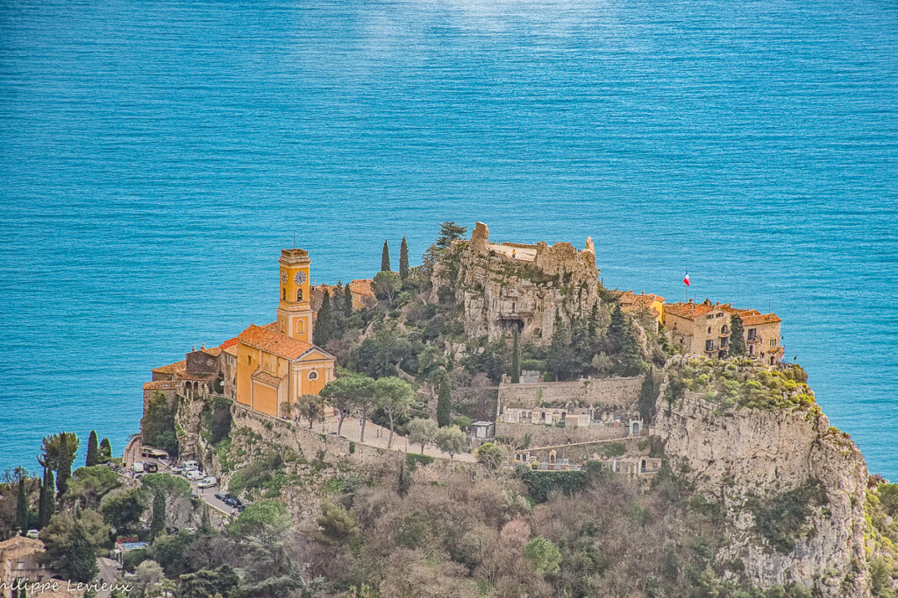
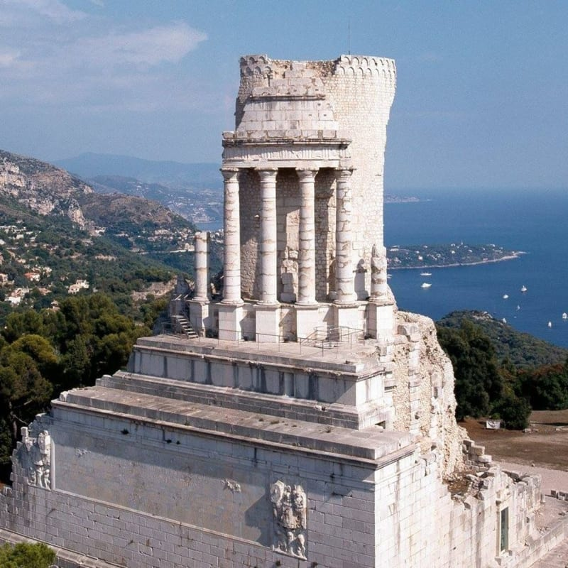
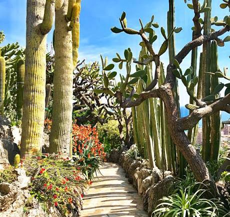
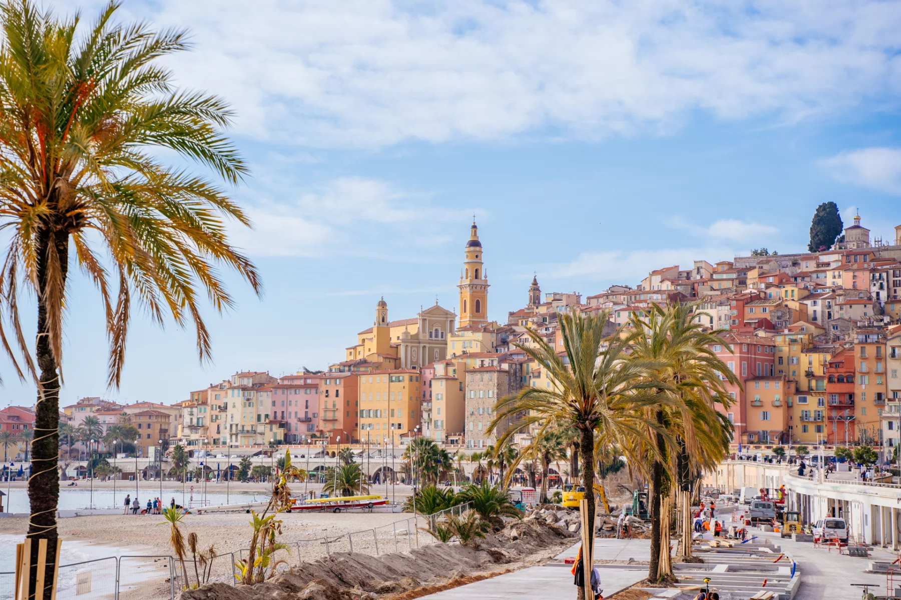

Dépliez une zone pour parcourir les fiches — ou repérez-les directement sur la carte ci-dessus.
Menton, Monaco & la frontière
 43.70°N
43.70°N7.31°E
La Rue Obscure
Une rue entièrement couverte depuis le XIIIe siècle, qui traverse la vieille ville de Villefran…
7.33°E
Sentier du littoral du Cap Ferrat
Un sentier côtier qui fait presque tout le tour de la presqu'île, offrant des vues continues su…
7.33°E
Villa Kerylos
Une reconstitution fidèle d'une villa grecque antique, construite au début du XXe siècle direct…

43.66°N7.36°E
Èze, le village perché
Un village médiéval accroché à un piton rocheux à 400 mètres au-dessus de la mer, avec des ruel…

43.74°N7.40°E
Le Trophée d'Auguste
Un monument romain colossal érigé en 6 avant J.-C. pour célébrer la soumission des peuples alpi…

43.73°N7.41°E
Le Jardin exotique de Monaco
Un jardin de cactus et plantes succulentes accroché à flanc de falaise calcaire, avec l'une des…

43.76°N7.50°E
Le village de Roquebrune-Cap-Martin
Un village médiéval qui grimpe en cercles concentriques autour de son donjon carolingien, l'un …
7.50°E
Le sentier Le Corbusier
Un sentier côtier qui longe le Cap Martin là où l'architecte Le Corbusier avait sa cabanon de v…
Nice et ses environs immédiats
L'arrière-pays : villages perchés & gorges
7.37°E
Peillon, village suspendu
Un village médiéval construit en pyramide sur un piton rocheux isolé, si photogénique qu'il app…
7.41°E
Peille, village de l'arrière-pays
Un village authentique de l'arrière-pays niçois, moins visité que son voisin Peillon, avec un e…
6.98°E
Gourdon, le nid d'aigle
Un village accroché à 760 mètres d'altitude au bord d'une falaise verticale, avec une vue qui p…
6.98°E
Les gorges du Loup et la cascade de Courmes
Un canyon calcaire creusé par la rivière Loup, ponctué de cascades et de marmites de géants scu…
7.00°E
Pont du Loup et son viaduc
Un hameau niché au confluent de deux vallées, dominé par les arches en ruine d'un viaduc ferrov…
7.05°E
Tourrettes-sur-Loup, la cité des violettes
Un village médiéval construit en arc de cercle au bord d'un plateau rocheux, célèbre pour la cu…
7.12°E
Saint-Paul-de-Vence
Un village fortifié du XVIe siècle qui a attiré Matisse, Picasso et Chagall, devenu l'un des ha…
7.10°E
Biot, le village des verriers
Un village perché connu depuis les années 1950 pour sa verrerie artisanale, reconnaissable à se…
7.15°E
Le Haut-de-Cagnes
Un village médiéval qui surplombe directement la zone balnéaire moderne de Cagnes-sur-Mer, cont…
Antibes, Cannes & le massif de l'Estérel
7.13°E
Le sentier du littoral du Cap d'Antibes
Un sentier côtier appelé aussi Tirepoil, qui fait le tour de la pointe du Cap d'Antibes entre c…
7.11°E
La pinède Gould
Une pinède centenaire plantée directement sur le sable, où se tient chaque été l'un des plus an…
7.05°E
Les îles de Lérins
Deux îles au large de Cannes, accessibles en une vingtaine de minutes de bateau, qui semblent a…
6.88°E
Le Pic du Cap Roux
Un sommet de 452 mètres dans le massif volcanique de l'Estérel, dont la roche rouge tranche vio…
6.94°E
Les calanques de l'Estérel
Une succession de criques encaissées entre les roches rouges de l'Estérel, bien moins connues q…
Grasse & le golfe de Saint-Tropez
6.92°E
La vieille ville de Grasse
La capitale mondiale du parfum, dont la vieille ville en escalier cache un dédale de ruelles et…
6.64°E
La Citadelle de Saint-Tropez
Une forteresse du XVIe siècle qui domine le port et tout le golfe de Saint-Tropez, à l'écart co…
6.58°E
Gassin, plus beau village de France
Un village perché classé parmi les plus beaux villages de France, à quelques kilomètres seuleme…